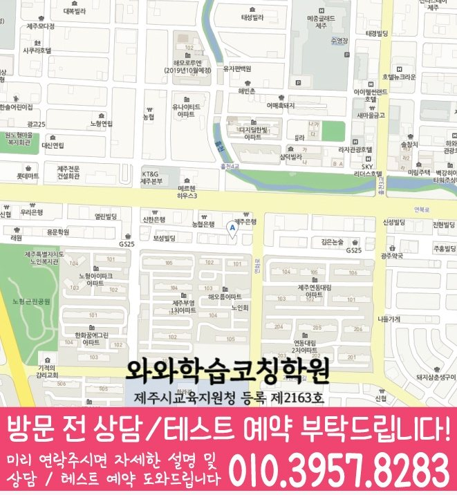

국어 수업 가능 학년
초3 · 초4 · 초5 · 초6 · 중1 · 중2 · 중3
KOREAN · ENGLISH · MATH LOCAL GUIDE
제주 제주시 연동에서 연동 국영수학원을 찾는 학부모를 위한 정보 페이지입니다. 초등 5학년의 국어·영어·수학 진단, 재학 학교별 내신 확인, 학원설명회, 과제·오답 관리와 상담 질문을 구체적으로 정리했습니다.
30초 핵심 안내
연동 국영수학원을 찾는 학부모에게 먼저 답하면, 세 과목을 한곳에서 배운다는 편의성보다 학생의 실제 약점을 진단하고 학교 진도·과제·오답·복습을 하나의 주간 계획으로 연결하는지가 더 중요합니다. 이 페이지는 새 학기 시간표에 아직 적응하지 못한 초등 5학년 학생으로, 영어 과제를 끝내도 틀린 문장을 다시 소리 내어 읽지 않는 편이며 시험 직전에 여러 교재를 동시에 펼치는 유형을 기준 사례로 삼습니다. 제주 제주시 연동 상담에서는 학교별 내신 자료와 최근 시험 자료를 함께 대조하고 학원설명회의 적용 조건을 구체적으로 물어야 합니다. 방문 기준 주소 제주특별자치도 제주시 노형동 727-3 대안빌딩 3층까지의 이동도 수업 후 복습 시간을 남길 수 있는지와 함께 판단해야 합니다.
연동은 수업 가능 생활권 기준입니다. 실제 방문 센터는 와와학습코칭센터 노형점이며, 주소와 등록 정보는 아래 센터 기준 정보에서 확인할 수 있습니다.
초3 · 초4 · 초5 · 초6 · 중1 · 중2 · 중3
초3 · 초4 · 초5 · 초6 · 중1 · 중2 · 중3 · 고1 · 고2 · 고3
초3 · 초4 · 초5 · 초6 · 중1 · 중2 · 중3 · 고1 · 고2


제주은행 연북로지점 주차장 뒷편 cu건물3층
센터 기준 정보
센터명·주소·등록 정보와 교습비 확인 경로를 상담 전에 살펴볼 수 있도록 정리했습니다.
제주 제주시 연동 상담 기준
제주특별자치도 제주시 노형동 727-3 대안빌딩 3층
제주시교육지원청 등록 제2163호
실제 수업 가능 시간은 학년·과목별 일정에 따라 상담에서 확인합니다.
동네명은 수업 가능 지역을 찾기 위한 안내 기준입니다.
노형초
서중 · 중앙중
지역내 모든 고등학교 가능
센터명·주소·등록번호·가능 학년·학교 참고 정보는 제공된 센터 자료를 기준으로 정리했으며, 실제 수업 범위와 일정은 상담에서 다시 확인합니다.
지역별 학습 안내
학생의 과목별 학습 상황과 상담 전에 확인할 기준을 여섯 가지 주제로 나누어 정리했습니다.
연동 상담에서 이번에 기준으로 삼을 학생은 새 학기 시간표에 아직 적응하지 못한 초등 5학년 학생으로, 영어 과제를 끝내도 틀린 문장을 다시 소리 내어 읽지 않는 편이며 시험 직전에 여러 교재를 동시에 펼치는 유형입니다. 세 과목 수업의 첫 진단은 최근 시험지, 사용 교재, 과제 이행 기록을 함께 보고 이해·적용·회상 중 어디에서 흐름이 끊기는지 찾는 방식이어야 합니다.
연동의 첫 2주에는 영어 약점 한 가지와 시험 직전에 여러 교재를 동시에 펼치는 습관을 동시에 모두 바꾸려 하지 말고 수업 당일 회상, 질문 한 개 기록, 오답 두 문항 재풀이처럼 작은 행동으로 나누는 편이 좋습니다. 해당 생활권에서는 학원설명회 관련 안내를 별도로 확인하고, 학습 계획이 이 작은 행동을 더 선명하게 만드는 방향인지 살펴야 합니다.
제주 제주시 연동 학교별 내신 자료를 확인할 대상에는 노형초·서중·중앙중이 포함됩니다. 연동 국영수학원의 학교별 대비는 목록의 이름만 보고 같은 자료를 적용하지 말고 초등 5학년의 교과서, 최근 시험지, 수행평가 안내를 기준으로 범위를 정해야 합니다. 제주 제주시 연동의 고등학교별 범위는 상담 때 최근 범위표와 시험 자료를 확인해 정합니다.
방문 기준 주소는 제주특별자치도 제주시 노형동 727-3 대안빌딩 3층이며, 연동에서 출발할 때는 지도상 거리뿐 아니라 학교 종료 뒤 이동, 식사, 수업 종료 후 귀가와 짧은 복습 시간을 한 일정에 넣어 보아야 합니다.
학원설명회를 확인할 때 가장 먼저 볼 것은 명칭이 아니라 적용 조건입니다. 해당 생활권 기준으로는 교육 철학 소개보다 반 배정 근거, 과목별 수업 흐름, 과제 기준, 결석 보완, 상담 주기를 먼저 확인하는 편이 실용적입니다.
연동 국영수학원에서 학원설명회를 설명할 때는 학생이 함께 참석한다면 자신의 약점과 목표를 말하게 하고 보호자는 비용·일정·피드백 방식을 질문해 역할을 나누는 것이 좋습니다. 학원설명회는 특히 설명 뒤 첫 한 달의 반 배정·과제·상담 계획이 학생의 실제 자료와 연결되는지 확인해야 합니다.
연동 학부모가 마지막으로 확인할 점은 다음과 같습니다: 설명을 들은 뒤 첫 한 달 계획이 학생 자료와 연결되는지 확인해야 일반적인 소개 문구와 실제 운영을 구분할 수 있습니다. 상담 내용을 함께 들었더라도 보호자와 학생이 따로 요약해 보면 추가로 물어볼 항목을 찾을 수 있습니다.
연동 국영수학원에서 세 과목을 함께 본다는 것은 같은 숙제량을 준다는 뜻이 아니라 과목마다 다른 병목을 한 주 계획 안에서 조정한다는 뜻입니다.
해당 생활권의 수학 수업에서는 유형을 외우는 단계와 낯선 문제에 적용하는 단계를 나누어 숫자·조건·질문 형태를 바꿔 풀게 해야 합니다. 연동 국영수학원의 국어 계획에서는 지문을 읽은 횟수보다 답의 근거를 표시하고 오답 선택지를 반박하는 훈련을 넣어야 합니다.
연동의 초등 5학년 과목 구성에서 영어 점검에서는 본문 암기만으로 독해력을 판단하지 말고 처음 보는 문장에서 주어·동사·수식어를 나누게 해야 합니다. 이 지역 국영수 수업에서 과목별 기준을 나누면 시험 직전에 여러 교재를 동시에 펼치는 학생도 무엇부터 고칠지 분명해집니다.
이 지역 국영수 수업에서 과제 관리를 확인할 때는 숙제를 낸다는 말보다 완료 기준, 예상 시간, 채점 담당자, 미완성 시 보완 절차를 물어야 합니다. 연동에서 시험 직전에 여러 교재를 동시에 펼치는 학생에게는 과제량을 늘리는 것보다 시작 시각과 제출 상태를 남기는 기록이 먼저 필요합니다.
완료율·반복 오답·질문 수·계획 변경이 함께 기록되어야 주간 피드백을 다음 행동으로 연결할 수 있습니다. 연동에서 초등 5학년 학생이 피드백 내용을 이해하고 다음 행동으로 옮기는지까지 봐야 보고서가 실제 관리 도구가 됩니다.
연동 상담에서는 운영의 구체성을 보기 위해 다음 여섯 질문을 한꺼번에 메모해 두는 편이 좋습니다: ① 진단 자료는 무엇을 보는가 ② 반 배정은 누가 어떤 기준으로 정하는가 ③ 과제 미완 시 어떤 보완이 있는가 ④ 시험 뒤 오답을 다음 계획에 어떻게 반영하는가 ⑤ 학원설명회의 조건은 서면으로 확인 가능한가 ⑥ 담당자 변경 시 기록은 어떻게 이어지는가.
지역 내에서는 모든 조건이 완벽한 곳보다 영어의 핵심 약점을 해결하면서 다른 두 과목의 최소 루틴을 유지할 수 있는지를 우선해야 합니다. 연동의 최종 선택은 시험 직전에 여러 교재를 동시에 펼치는 학생이 실제로 실행할 수 있는 구조인지에 달려 있습니다.
FAQ
세 과목 상담에서는 시험 직전에 여러 교재를 동시에 펼치는 학생에게 예상 시간과 완료 기준이 분명한 과제를 먼저 주어야 합니다. 해당 생활권의 미완 이유를 기록하고 다음 양을 조정해야 과제가 관리 도구가 됩니다.
해당 학원에서는 설명 뒤 첫 한 달의 반 배정·과제·상담 계획이 학생의 실제 자료와 연결되는지 확인해야 합니다. 지역 내 기준으로 담당자, 적용 시점, 변경 조건, 기록 방식이 확인 가능한 안내로 남는지도 함께 살펴보아야 합니다.
연동의 실제 출발지에서 학교 종료 뒤 이동 시간과 귀가 방식을 계산하고 이 지역 국영수학원의 상담 가능 시간·수업 종료 시각·지각이나 결석 연락 절차를 미리 확인해야 합니다.
이 지역 국영수 과정에서는 초등 5학년의 최근 시험지, 사용 교재, 과제 이행, 오답 재풀이 여부를 보고 이해·적용·회상 중 어디가 막히는지 확인해야 합니다. 상담 기준으로는 반 이름이나 선행 진도보다 진단 근거와 첫 점검 날짜가 먼저입니다.
공통 개념은 함께 공부할 수 있지만 내신 범위는 학교와 학년별로 달라질 수 있습니다. 최근 평가 자료를 기준으로 학생별 준비 순서를 다시 정하는 편이 좋습니다.
상담 상황 예시
실제 성과를 보장하는 후기가 아니라, 연동 학생의 상황을 기준으로 구성한 상담 장면 예시입니다.
아이가 새 학기 시간표에 아직 적응하지 못한 초등 5학년 학생으로, 영어 과제를 끝내도 틀린 문장을 다시 소리 내어 읽지 않는 편이며 시험 직전에 여러 교재를 동시에 펼치는 유형이라 처음에는 교재를 더 늘려야 한다고 생각했습니다. 해당 학원을 비교하며 학원설명회의 조건과 과목별 과제 기준을 따로 확인하니 점수 약속보다 오답 재풀이 날짜와 주간 피드백을 보는 편이 낫다는 점이 분명해졌습니다. 연동에서 아이도 다음에 무엇을 해야 하는지 전보다 구체적으로 말할 수 있는 계획을 우선하게 됐습니다.